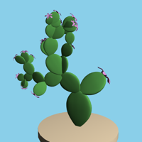
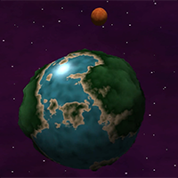
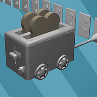
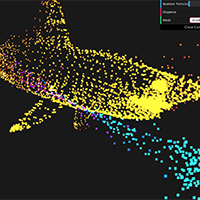

Selected Projects
GPU Monte Carlo Path Tracer: CUDA, C++ (Fall 2019)
A GPU parallelized Monte Carlo path tracer. See more images at the GitHub link.

CPU Monte Carlo Path Tracer: C++ (Spring 2018)
Multi-month implementation of a Monte Carlo Path Tracer, including various integration methods such as direct lighting and global illumination with multiple importance sampling. Culminated in photon mapper using k-d tree. Implemented additional features including thin lens camera, ray marching of implicit surfaces, various light sources (area light, point light, and spotlight) and materials.

{kind=link}
{kind=link}
Flocking Boids: CUDA, C++ (Fall 2019)
A GPU parallelized flocking boids simulation based on the Reynolds Boids algorithm, featuring three different implementations.

Real-time Grass Simulation: Vulkan, C++ (Fall 2019)
An implementation of Responsive Real-Time Grass Rendering for General 3D Scenes in Vulkan, featuring a compute pipeline for physics simulation and three culling heuristics and a graphics pipeline utilizing tessellation.

Wave Function Collapse: C++, OpenGL, Qt (Spring 2019)
A C++, voxel-based implementation of Wave Function Collapse (skip to 2:47 in the video below for the demo). This algorithm takes in a tileset and some adjacency information about those tiles (which tiles can sit next to which, and in what direction) and can generate infinite configurations in an NxNxN grid using those tiles. This implementation
featues a build mode, in which the user can place down starting tiles and then run the algorithm. There is also an option to watch
the algorithm run iteratively: at the start, each grid cell contains a transparent cube representing the potential tiles that can be placed in that cell. As the algorithm progresses, the number of valid tile options for a given cell decreases, and the transparent cube in that cell decreases
in size until it disappears completely and is replaced by that cell's observed tile.
The knots tile set was created by the original author, while the two other tile sets were created by me in MagicaVoxel.
I'm currently in the processing of updating the project
to use instance rendering while also thinking in a more data-oriented mindset.

Knots tileset

Castle tileset

Building tileset

Build mode

Iterative algorithm view
Select assignments from a Spring 2018 procedural graphics course, using TypeScript and WebGL. Click the images to see the demos!
Cactus L-System
An art-directable cactus L-system. The user can control the number of iterations (string expansions), the rotation of the plant (how much each paddle rotates), the scale of the paddles, and the color of the flowers. Once given a seed string ('0'), the string is expanded a number of times (based on the number of iterations). It then figures out which drawing functions to call, and calls them using the Turtle (who keeps track of position, orientation, etc).
Noisy Planet
Assignment to experiment with various noise functions. The planet terrain color and height was generated using 3D fractal Brownian motion (FBM). The water color was created with recursive Perlin noise, animated to look like waves. The moon was textured with summed 3D Perlin noise and 3D Worley noise to create illusion of craters. The background color was created with 3D FBM, with star placement controlled by 3D Worley noise.
Realtime Sphere Tracing of Implicit Surfaces
Animated scene made entirely in the fragment shader. Features real-time sphere tracing of implicit surfaces using signed distance functions, domain repetition, and specular reflection. It's also a toaster mobile.
Interactive Particle System
An interactive particle system. The particles' movement is controlled by Euler integration. Their initial position and velocity are randomized; they also have randomized masses. I took a lot of inspiration for their physics from springs and Hooke's Law; for example, I make use of dampening and stiffness constants. The particles are colored based on their distance to the origin, or a target point if there is one. The user can left click to attract particles and right click to repel them. The user can also select from several meshes to attract the particles to. If you wish to disperse the particles, you can click disperse which assigns each particle a random velocity. You can also edit the number of particles in the scene.
VR Cave Explorer: Blender, Unity, C# (Spring 2019)
Final project for Environmental Animation course. The goal was to research an
interesting technique and use it to create an animation: I chose to explore the rendering of
stereoscopic, 360-video to make animations for a small, immersive, choose-your-own adventure VR game on the Oculus Go. All environments were modeled in Blender, then rendered as 2k stereoscopic, panoramic frames, which were made into animations using Adobe After Effects. The game was assembled using Unity, using the animations as the render textures on a sphere, creating the effect of being surrounded by the environments. The 2D UI assets were made with Adobe Illustrator and Photoshop.
See the first half of the video for a playthrough in the Oculus Go, and the second half of the video for the rendered animations.
Custom Maya nodes made in Spring 2019 using C++, Python, MEL, and the Maya API
Terrain Shaper Plugin
A custom Maya plugin featuring an implementation of a deformer node based on Dijkstra-based Terrain Generation Using Advanced Weight Functions. Allows for procedural generation of terrain meshes and height maps in Maya using user-defined parameters such as detail maps, weight functions, initial points, and steepness.
L-System and Random Nodes
Two custom Maya nodes, an L-system node and a random node, along with a MEL-based menu and commands. The L-system node (Python and SWIG-wrapped C++) allows for the creation of an art-directable L-system creation (with parameters such as angle, grammer, and number of string expansions) given user-selected branch and flower meshes.
The random node (Python) allows for the generation of random points, given the user input of number of points to generate and a range in 3D space within to generate the points. This can be used in conjunction with an instancer node to produce multiple copies of an object (such as an l-system instance) at those points.
Use of the L-system node in conjunction with with the random node and an instancer node.
Mini Minecraft: C++, OpenGL (Fall 2017)
Three-person project to develop Minecraft-inspired game. Implemented procedurally generated terrain with 2D fractal Brownian motion, raymarching and ray-cube intersections for interaction with environment, A* algorithm to determine movement of non-player character, distance fog, and multithreading in terrain generation

Mini Maya: C++, OpenGL, Qt (Fall 2017)
Implemented Maya-inspired mesh editor with GUI allowing for import of OBJ files, half-edge mesh manipulations such as face extrusion, Catmull-Clark subdivision, face triangulation, and skeleton skinning